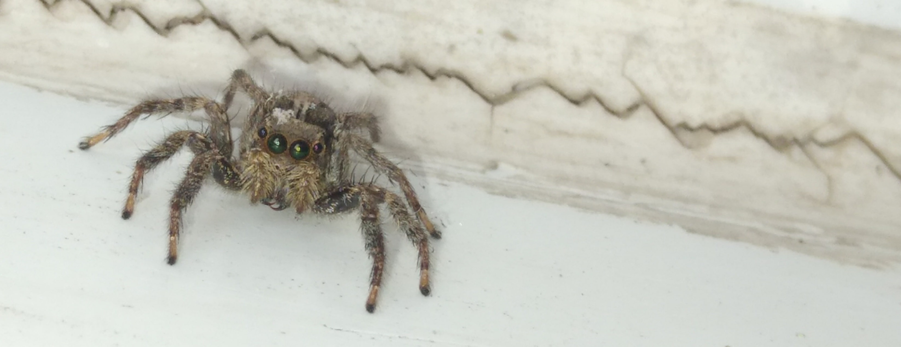

Hi! I’m Belling Mamak Bella (or Cyberg Lipthoyn either), a person who has curiosity about the world and its aspects :D
Developing Stuff
This is my first favorite stuff and driven by curiosity about how the programs and the softwares work
[Unloved] Animal Loving
Loving animals is my recently developed favorite. However, I do early have an impression about the animals, especially insects or unloved creatures which are hated by most people, such as [jumping] spiders
By the way, The animals I love most are Moths, Jumping spiders (Salticidae) and Bunnies
Drawing
Drawing is also my recently developed hobby; I’m currently practicing drawing. The reason why I do is quietly complicated (not just that I’m curious)
By the way, the left character is drawn(1) by me, I called he/they “Bombyx Dei” (Silkmoth of god, similar to: Bombyx mori, a tiny domesticated moth :3); this character was inspired by an OC of Boxcutter (@Boxcutter0 on X) which is called “神虫” (“God of Bug”, translated by Google, btw).
(1): I had drawn him in my notebook, then I ported with inkscape
Philosophical, Thought Hobby
In spite of having some thoughts of some problems that I came across or experienced before, I recently have expressed them more clearly. I often think about logic, systems, existential problems and sometimes morality. However, I haven’t developed my perspective consistently and have changed my viewpoint periodically
About politics, Although it is not my cup of tea, I tend to be centrist or whatever. On an economic scale, I support free markets and capitalism; on the social scale, I side with both left and right because I support/accept both some progressive ideologies (such as LGBTQA+, feminism, gender equality, human rights,...) and some traditional ideologies (like traditional values, Christianity-Islam-Judaism, Conservatism...)
There is no wallet available for donation.
